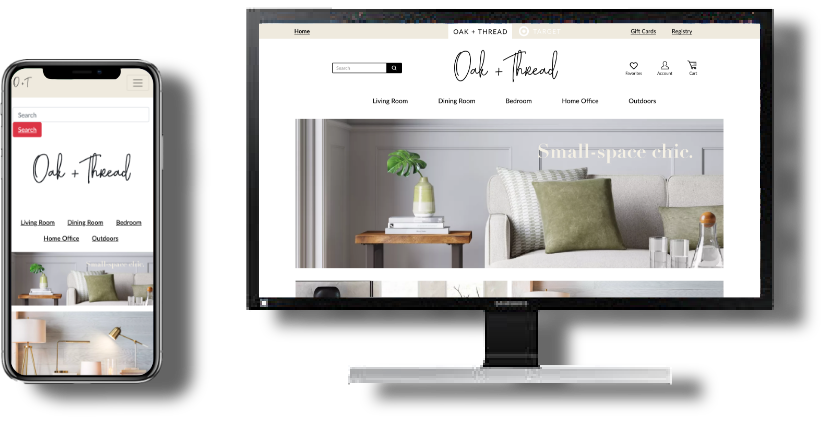

About Oak & Thread
We created a new line of Decor and Furniture for Target, We invite to a Comfortable and Classy place to Accent your Home.
My Role
I was the UX designer on this project, I also was Co-Developer of the Website and I collaborate with the Creative Design and The Research.